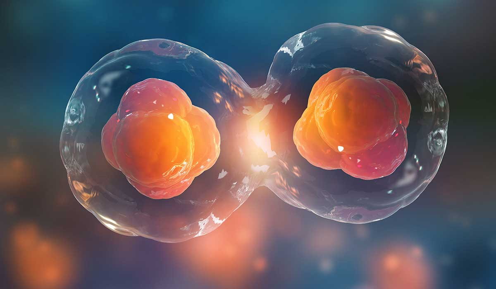
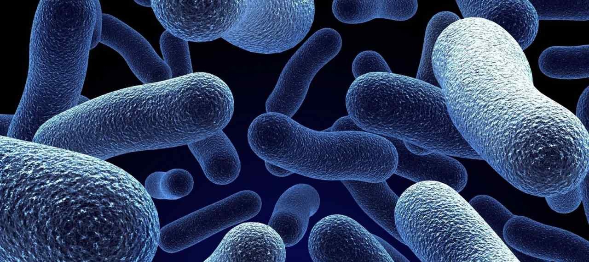
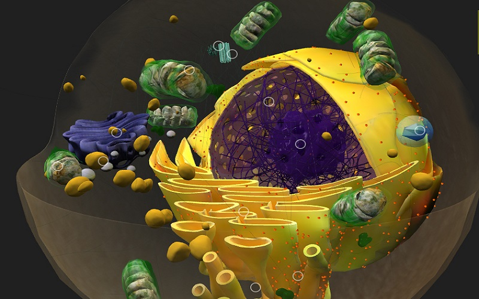

La teoría celular

La teoría celular explica la constitución de los seres vivos sobre la base de células, el papel que estas tienen en la constitución de la vida y en la descripción de las principales características de los seres vivos
Principios
La teoría celular tiene 3 principios:
Todos los seres vivos están formados por células, bacterias y otro tipo de organismos, o por sus productos de secreción. La célula es la unidad estructural de la materia viva, y dentro de los diferentes niveles de complejidad biológica, una célula puede ser suficiente para constituir un organismo.
Las funciones vitales de los organismos ocurren dentro de las células, o en su entorno inmediato, controladas por sustancias que ellas secretan. Cada célula es un sistema abierto único e irrepetible, que intercambia materia y energía con su medio. En una célula caben todas las funciones vitales, de manera que basta una célula para tener un ser vivo. Así pues, la célula es la unidad fisiológica de la vida.
Todas las células proceden de células procariotas preexistentes, por división de éstas (Omnis cellula e cellula) o célula madre. Es la unidad de origen de todos los seres vivos. Esto determina además de la sucesión y conservación de estas unidades, las pertinencias sobre ciertas características homólogas entre las eucariotas y las procariotas de manera que fundamenta el hecho de haber establecido a las células procariotas como las primeras en este mundo y las más primitivas.
CLASES DE CÉLULAS
Procariotas

Las células procariotas son las más pequeñas y las menos complejas. Se diferencian de las células eucariotas en que las procariotas carecen de núcleo. Las hay de dos tipos: arqueas y bacterias. Debido a que son más simples y son unicamente unicelulares, se considera que son las células más antiguas y primitivas, y que el ancestro común de todos los organismos vivos es una célula procariota.
Eucariotas

Las células eucariotas son más grandes y complejas. Se diferencian porque su material genético esta encerrado en un núcleo y pueden formar organismos multicelulares. Las células animales, vegetales y fungi son ejemplos de organismos eucariotas.Tienen un citoplasma compartimentado por membranas y organelos especializados para realizar ciertas funciones. Además, se diferencian de las células procariotas porque su material genético, el ADN es de doble hélice, mientras que el ARN de las células procariotas es simple.
Si quieres conocer más sobre la clasificación y estructura de las células, haz click aquí